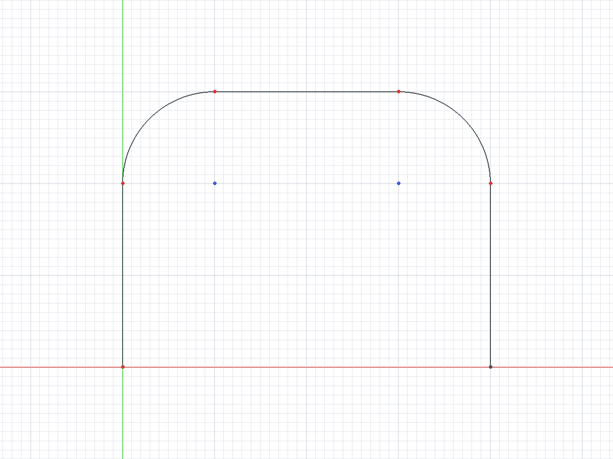
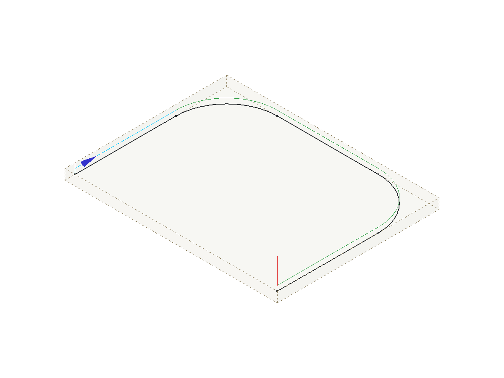

Postprocessor Customization
Overview
The CAM workbench stores each Toolpath as a sequence of G-code commands. The commands describe straight moves, circular arcs, feed values, speed values and machine functions. A more complex curve, such as a B-spline, is already approximated by lines and arcs in the Toolpath.
A Post-Processor (Post) translates these commands into a complete file for the control of one machine. The file is usually G-code in the dialect of the control. A Post can also write a different language, such as HPGL, DXF or Heidenhain Klartext.
This page explains how to change a Post or write a new one. Post Process is the command that runs a Post.
Two kinds of Post-Processor
The workbench has two kinds of Post.
-
A legacy script Post is a Python module with the function
export(objectslist, filename, argstring)and anargparseparser. The Processor field of the Job selects the Post. The Arguments field of the Job configures the Post. -
introduced in 26.3 A machine-based Post is a class that inherits from
Path.Post.Processor.PostProcessor. The module sets the constantPOST_TYPE = "machine". A Machine selects the Post. The.fcmfile of the Machine and the property schema of the Post configure the Post.
Only a machine-based Post can post an Operation on a tilted Work Plane. A legacy Post stops the export for such an Operation. A Work Plane parallel to the table posts with the two kinds of Post.
Functions of a Post-Processor
The output for a control can be different from the internal commands in these areas:
-
The start sequence of the program.
-
The stop sequence of the program.
-
The arc centre, which is relative or absolute.
-
The line numbers and their format.
-
The canned cycles for standard sequences, such as a drill cycle.
-
The output units, metric or imperial.
-
The moves before a tool change that help the operator.
-
The comments, which make the program easier to read and also make the file larger.
-
The header that identifies the program.
Preparation
Make a small Model that shows how the control reads straight lines and arcs. Prepare a reference program for the same geometry with software that is known to operate correctly with the machine.
A Toolpath that starts at (0, 0, 0) and moves in the Y direction is a good first test. The centre of the Tool Bit must follow the Toolpath, thus do not apply tool radius compensation. One level in the XY plane is sufficient for the first test.
The figure shows a sketch of such a test geometry.

In the 3D view, a small blue arrow at the start point shows the start direction of the Toolpath.
The figure shows the arrow on the first move of the Toolpath, where the pointer is.

Compare the reference program with the output of an included Post, such as linuxcnc_legacy_post.py or grbl_post.py. Then adapt the Post that gives the nearest output.
Naming convention
The file name of a Post is <name>_post.py. The suffix _post.py must be lower case. The Post name is the file name without _post.py.
-
A script Post defines
export()at module level. -
A class Post defines a class whose name is the title-cased Post name. Examples:
linuxcncgivesLinuxcnc,mach3_mach4givesMach3_Mach4,masso_g3givesMasso_G3. -
A class with a different name gets a module-level alias with the title-cased name. The
heidenhainPost contains the lineHeidenhain = HeidenhainPost. Thegeneric_sheet_cuttingPost contains the lineGeneric_Sheet_Cutting = GenericSheetCutting. -
A class Post with
POST_TYPE = "machine"is available in the Machine Editor. A class Post without that constant is a legacy Post and is available in the Processor list of the Job.
In a script Post, set prog of the argparse parser to the Post name. The tooltip of the Arguments field of the Job then shows the correct help text.
import argparse
parser = argparse.ArgumentParser(prog="grbl", add_help=False)Included Post-Processors
The included Posts are in the folder <FreeCAD>/Mod/CAM/Path/Post/scripts. Post Process lists the included Posts by kind. Post-Processor Genealogy lists the class of each class Post.
These Posts are good examples to read:
-
linuxcnc_legacy_post.py: a script Post for LinuxCNC. -
grbl_post.py: a class Post for grbl. -
generic_post.py: the smallest machine-based Post. Use this file as the start of a new machine-based Post. -
linuxcnc_post.py: a machine-based Post with two Job-scope properties. -
fanuc_post.py: a machine-based Post that changes many defaults of the common properties and adds its own properties. -
generic_sheet_cutting_post.py: a machine-based Post for plasma, laser and waterjet machines. The Post changes the Toolpath commands before the conversion. -
heidenhain_post.py: a machine-based Post that does not write G-code. The Post replaces each conversion function and writes Klartext blocks.
Legacy script Post-Processor
This section applies to the *_legacy_post.py files and to other script Posts. The example shows the structure of a script Post.
import Path.Post.Utils as PostUtils
from PathScripts import PathUtils
def export(objectslist, filename, argstring):
gcode = ""
for obj in objectslist:
gcode += parse(obj)
if filename != "-":
with open(filename, "w") as gfile:
gfile.write(gcode)
return gcode
def parse(pathobj):
out = ""
if not hasattr(pathobj, "Path"):
return out
path = PostUtils.cannedCycleTerminator(PathUtils.getPathWithPlacement(pathobj))
for c in path.Commands:
words = [c.Name]
for name, value in c.Parameters.items():
words.append(f"{name}{value:.3f}")
out += " ".join(words) + "\n"
return outThe export() function collects the output text for all objects: Operations, Tool Controllers and Fixture items. The function writes the header, the comments, the preamble and the postamble. The function gives each object that has Toolpath commands to parse().
The parse() function reads each command of one object and makes one line of text for the command. The Name of a command is the G or M word. The Parameters of a command are its other words. An included script Post records the last command name and thus suppresses a modal command that occurs again. An included script Post also has a linenumber() function. That function returns the line number text when line numbers are on, and an empty string when they are off.
These rules apply to a script Post:
-
The
export()function returns the output text. Whenfilenameis-, the function does not write a file. -
The export gives the script each Toolpath in world coordinates.
PathUtils.getPathWithPlacement()does not apply the Work Plane a second time. -
Call
PostUtils.cannedCycleTerminator()on the Toolpath before the command scan. A Drilling Operation records the retract mode only as an annotation on each cycle command.cannedCycleTerminator()adds a literalG98orG99before each group of canned cycles andG80after the group. A script that does not call the function does not seeG99. -
A cycle with no retract annotation gets the last literal
G98orG99of the Toolpath. When the Toolpath has none, the cycle getsG98.
A class Post that uses arguments does not contain parse(). The class calls the shared functions Path.Post.UtilsArguments.init_shared_arguments, Path.Post.UtilsExport.export_common and Path.Post.UtilsParse.parse_a_path. The class replaces init_values() and init_argument_defaults() to change the defaults.
Common arguments
A class Post that uses arguments accepts the arguments below in the Arguments field of the Job. Many arguments have a --no- form, for example --header and --no-header.
| Area | Arguments |
|---|---|
Units and precision |
|
Header and comments |
|
Format |
|
Blocks |
|
Machine functions |
|
Conversion |
|
Interface |
|
A script Post defines its own set of arguments. The linuxcnc_legacy Post accepts --no-header, --no-comments, --line-numbers, --no-show-editor, --precision, --preamble, --postamble, --inches, --modal, --axis-modal, --no-tlo and --rigid-tap.
Machine-based Post-Processor
introduced in 26.3: A machine-based Post is a class that a Machine selects. Writing a Machine-Based Post-Processor is the full developer reference. Machine Configuration describes the Machine file. This section is the short version.
Start from generic_post.py. The example shows the minimum form.
from Path.Post.Processor import PostProcessor, SCOPE_JOB, SCOPE_MACHINE
POST_TYPE = "machine"
class Mymachine(PostProcessor):
@classmethod
def get_common_property_schema(cls):
props = super().get_common_property_schema()
for prop in props:
if prop["name"] == "file_extension":
prop["default"] = "ngc"
elif prop["name"] == "preamble":
prop["default"] = "G17 G54 G40 G49 G80 G90"
return props
@classmethod
def get_property_schema(cls):
return [
{
"name": "blend_mode",
"scope": SCOPE_JOB,
"type": "choice",
"label": "Path Blending Mode",
"default": "BLEND",
"choices": ["EXACT_PATH", "EXACT_STOP", "BLEND"],
"help": "The blend mode that the control uses between moves.",
},
{
"name": "automatic_tool_changer",
"scope": SCOPE_MACHINE,
"type": "bool",
"label": "Automatic Tool Changer",
"default": False,
"help": "The machine has an automatic tool changer.",
},
]
def __init__(self, job, tooltip="My machine post processor", tooltipargs=[], units="Metric"):
super().__init__(job=job, tooltip=tooltip, tooltipargs=tooltipargs, units=units)
def init_values(self, values):
super().init_values(values)
values["MACHINE_NAME"] = "My machine"
values["POSTPROCESSOR_FILE_NAME"] = __name__Property schema
A machine-based Post declares its settings as Post-Processor Properties in two class methods.
-
get_common_property_schema()returns the properties that every machine-based Post has. A Post replaces this method to change a default or a help text, as the example shows. Machine lists the common properties. -
get_property_schema()returns the properties that only this Post has.
Each schema entry is a dictionary with these keys:
| Key | Content |
|---|---|
|
The name of the property. The Machine file stores the value by this name. The Post reads the value from |
|
One of |
|
The label that the interface shows. |
|
The default value. |
|
The Property Scope: |
|
The help text. |
|
The permitted values of a |
|
The limits of an |
|
The number of decimal places of a |
Path.Post.Processor supplies the scope values as the constants SCOPE_MACHINE, SCOPE_JOB, SCOPE_RUN and SCOPE_INTERNAL. The scope sets where the property is edited.
| Scope | Where the property is edited |
|---|---|
|
The Machine Editor only. Use this scope for a property that describes the machine or its control. |
|
The Machine Editor sets the default. The Options tab of the Post-Processing Dialog overrides the default for one run. |
|
The Overview tab of the Post-Processing Dialog only. The value is not stored. |
|
No interface shows the property. The Post derives the value. |
These rules apply to the scope key:
-
An entry with no
scopekey has Job scope. -
An entry with
"runtime": Trueand noscopekey has Run scope. -
An entry with an unknown scope value has Job scope. The export writes a warning to the log.
The function property_scope(prop) returns the scope of one entry. The function properties_in_scope(schema, *scopes) returns the entries that have one of the given scopes.
The Machine file stores the changed values in postprocessor.properties. Machine Configuration gives the priority of the value sources.
Properties of the included Post-Processors
The table lists the properties that the included machine-based Posts add to the common properties.
| Post | Property | Scope | Values and default |
|---|---|---|---|
|
Path Blending Mode |
Job |
|
|
Blend Tolerance |
Job |
Default: 0.0. |
|
Automatic Tool Changer |
Machine |
Default: unchecked. |
|
Automatic Spindle Control |
Machine |
Default: unchecked. |
|
Pierce Delay |
Job |
Default: 1000. |
|
Cooling Delay |
Job |
Default: 500. |
|
Marking Delay |
Job |
Default: 100. |
|
Control Method For Cutter |
Job |
|
|
Strip Z Parameters |
Job |
Default: unchecked. |
|
Strip F Parameters |
Job |
Default: unchecked. |
|
Force Rapid Feeds |
Run |
Default: unchecked. |
|
Mark Entry Points Only |
Run |
Default: unchecked. |
|
Program Name |
Job |
Default: empty. An empty value uses the Job label. |
|
Output BLK FORM |
Job |
Default: checked. |
|
Tool Axis |
Machine |
|
|
Rapid Feed Rate (0 = FMAX) |
Machine |
Default: 0. |
|
Drill Cycle Format |
Machine |
|
|
Drill Cycle Set-Up Clearance |
Machine |
Default: 2.0. |
|
Chip Breaking Retract |
Machine |
Default: 0.5. |
|
Fixture Output |
Machine |
|
|
Fixture Number for G54 |
Machine |
Default: 1. |
|
Program Number |
Job |
Default: 0. The value 0 writes no |
|
Tape Marks (%) |
Machine |
Default: checked. |
The Control Method For Cutter values of the generic_sheet_cutting Post have these effects:
-
Z_Control: the Post writesM3on a downward Z move andM5on an upward Z move. -
G0_Control: the Post writesM3on a change fromG0toG1andM5on a change fromG1toG0. -
Spindle_Control: the Post writes eachM3andM5command of the Toolpath without a change.
The opensbp Post sets the default of the common property Ignore G-code Commands to its own list of tolerated commands. The opensbp Post always expands the drill cycles into moves.
Export sequence
The entry point of a machine-based Post is export2(). The method does these stages in sequence:
-
Shows the dialog of
pre_processing_dialog(). -
Builds the ordered list of items to post: Fixture items, Tool Controller items and Operations.
-
Calls
_expand_postprocessor_commands(). A Post replaces this method to change the commands of the items. -
Puts each Toolpath into the coordinates that the Machine runs and adds the rotary moves and the plane commands (
_expand_workplane_frames()). -
Expands the commands with the
expand*methods. The expansions cover the blocks, the canned cycle end, the drill cycle expansion, the arc split, the rapid move translation, the tool change and the bCNC blocks. -
Removes modal duplicates (
_optimize_duplicates_doubles()). -
Adds line numbers (
_add_line_numbers()). -
Converts each command to text with the
convert*methods and applies the line end characters.
All stages before the conversion operate on Path.Command objects. No stage changes the text after the conversion.
A Post replaces these methods to change the output:
-
_merge_machine_config(): sets values that the control makes necessary, after the Machine values are applied. Call the method of the parent class first. -
expand_prefix(),_expand_trailing_lines()and the other_expand*methods: change one expansion stage. -
_expand_tool_length_offset_post_command(item, command): returns the commands that apply the length offset of the Tool Bit after anM6command. The default returnsG43 H<tool>. -
_convert_rapid_move(),_convert_linear_move(),_convert_arc_move(),_convert_drill_cycle(),_convert_dwell(),_convert_tool_change(),_convert_spindle_command(),_convert_coolant_command(),_convert_program_control(),_convert_fixture(),_convert_modal_command()and_convert_generic_command(): convert one command to text. A method that returnsNonewrites no line. -
_convert_job_sections(): changes the complete text of each section. -
get_sanity_checks(job): returns the Squawks of the Post for the Sanity Check. The Warnings tab of the Post-Processing Dialog and Quick Validate show them.
The heidenhain Post replaces every conversion method, because no Klartext block has the form of a G-code command. The same Post replaces _add_line_numbers() and gives each block a number in _convert_job_sections().
Tool change
The Post writes the output of a tool change in this sequence:
-
The Pre-Tool Change block.
-
The tool change comment.
-
The
M6command. -
The Post-Tool Change block.
-
The
G43command, when TLO after tool-change is checked. -
The spindle start command.
-
The Tool Return after tool changes block.
When Allow tool-change is unchecked, the Post does not write M6 and does not write the Post-Tool Change block. The Post writes the Tool Return after tool changes block in the two conditions. When TLO after tool-change is unchecked, the Post replaces each G43 command of the Toolpath with a comment.
Drill cycles
The Translate Drill Cycles option of the Machine expands drill cycles into G0 and G1 moves. The common property Drill Cycles to Translate lists the cycles that the Post expands. The default list is G73, G81, G82, G83 and G85. The common properties contain no other switch for the expansion.
The Post ends each group of canned cycles before the expansion. The expansion thus knows the retract mode of each cycle. A G85 cycle becomes a G1 move to the depth, a G1 move to the retract height and a G0 move to the clearance height.
A Post for a control that runs every cycle sets the default of Drill Cycles to Translate to an empty list. The fanuc Post and the heidenhain Post do this.
Commands and rapid moves
-
Supported G-code Commands lists the commands that the Post accepts.
-
Ignore G-code Commands lists commands that the Post accepts and removes from the output. A command in this list is not necessary in Supported G-code Commands.
-
translate_no_engagement_feedchanges a markedG0move into aG1move. An Operation that has a no-engagement feed marks these moves with that feed. Default: unchecked.
Modal output and line numbers
When Duplicate Commands of the Machine is unchecked, the Post removes a command word that is the same as the command word before it. When Duplicate Parameters is unchecked, the Post removes an axis parameter whose value did not change. A tool change and an item of plain text reset this state. A comment does not change this state.
When Line Numbers of the Machine is checked, the Post gives each command an N parameter. These rules apply:
-
The count starts again at Line Number Start in each section of the output.
-
A comment gets no number.
-
A line of a text block, such as the preamble, is counted but gets no number.
-
A command that already has an
Nparameter keeps its value. -
The number is not the physical line number of the file.
The filter_inefficient_moves option of the Machine has no effect on the output of a machine-based Post.
Work Planes and rotary axes
Two class attributes tell the export what a Post can write for an Operation on a tilted Work Plane.
-
ROTATION_STRATEGIES: the strategies that the Post can emit. Default:("dwo", "twp"). The Machine selects one strategy. The export stops when the Post cannot emit that strategy. -
PLANE_COMMAND: the plane command family for thetwpstrategy, a member ofPath.Post.TiltedWorkPlane.PlaneCommand. Default:PlaneCommand.G68_2.
PlaneCommand |
Declare line | Align line | Cancel line |
|---|---|---|---|
|
|
|
|
|
|
|
|
|
|
None |
|
G68_2 and G268 take intrinsic Z-X-Z Euler angles. PLANE_SPATIAL takes spatial angles about the fixed machine axes X, Y and Z. The common properties Tilted work plane: declare, Tilted work plane: align and Tilted work plane: cancel replace one line for a control with a different form. Machine describes these properties and the Rotation Strategy of the Machine.
When the rotary axes move, the Post writes the Pre-Rotary Move block before the move and the Post-Rotary Move block after the move. The Post writes rotary axis angles with the axis precision and does not convert them between millimetres and inches.
Machine output options
A machine-based Post gets its output format from the output options of the Machine, not from arguments. The options are in these groups:
-
Units, tool length offset output and header output.
-
Header items: date, description, document name, Machine name, project file, units, Tool Bit list, Fixture list. A Fixture is a G54 to G59.9 selection, not the workholding.
-
Comments: enabled, symbol, Operation labels, empty lines, bCNC comments.
-
Format: line numbers, start, prefix, increment, command space, line end characters.
-
Precision: axis, feed, spindle.
-
Duplicates: commands, parameters.
-
Processing: early tool prep, split arcs, tool change, translate drill cycles, translate rapid moves, XY before Z after tool change, return-to position.
Edit the options on the Options tab of the Machine Editor. Machine Configuration describes each option.
Add a custom Post-Processor
Put the Post file in one of these locations:
-
The macro folder, set in .
-
The CAM file path, set in .
-
An add-on whose
package.xmldeclares a Post-Processor content item.
Then do these steps:
-
Make sure that the file has read permission.
-
For a legacy Post, enable the Post in .
-
Open the Job task panel again. If the file was already loaded, start FreeCAD again.
Use the macro folder while you test a new Post.